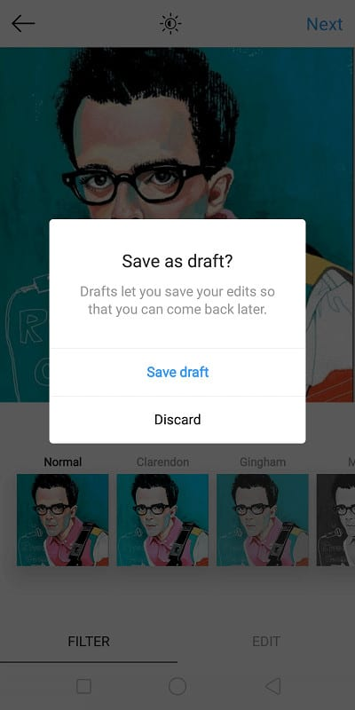
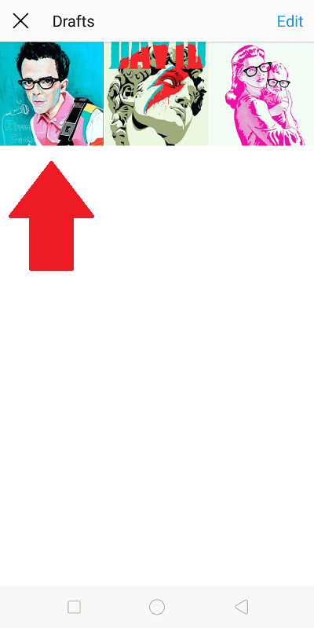

When it comes to Instagram statistics, the numbers are constantly on the rise. Currently, the platform boasts more than 500 million active users daily. There are over 25 million businesses, and over 500,000 well-known influencers.
As a result, the challenge of standing out from the crowd has become an increasingly tricky feat in recent years. Top that off with frequent algorithm changes, and even more users added on the daily.

Luckily, as the platform continues to grow, so does the plethora of valuable Instagram management tools. These are apps or services that help users maintain a relevant, quality Instagram presence – which, as we all know, is key to growing your audience and engagement. One of the most mandatory tools any budding influencer or business should have is none other than the handy Instagram post scheduler.
Why Use An Instagram Post Scheduler
An Instagram post scheduler is a third-party app or platform that allows you to organize your content hours, days, weeks, or even months ahead of time.
This is beneficial for those who wish to optimize their postings – publishing content at certain times that generate the most engagement. Unfortunately, these could take place at inconvenient hours or days of the week.

With an Instagram post scheduler, this hassle of manual publishing (at possibly unreasonable times) is done away with. You can line up all your desired content ahead of time – and allow a third party to post them on your behalf. This also allows you to hash out all your ideas for the week (or month!) in a single session. As a result, you save on time, energy, and creative brainpower!
Using An Instagram Scheduler For Building A Consistent Theme
An Instagram post scheduler is also useful for creating a cultivating an overall aesthetic for your Instagram feed.
Many Instagram schedulers (like Later) provide a visual preview of all your planned posts at a given time. This lets you examine just how well each post fits in with the other in terms of its look, feel, and color palette.

Courtesy of innisfree.instalog (Instagram account).
A Webdam report states that 60% of brands on the platform use the same filter on each of their posts, as this allows for a consistent, distinct visual theme that sets it apart from other profiles.
Thus, with an Instagram scheduler, you can ensure you’re crafting an overall unified tone for your content that creates the emotional impact you’re after.
Does The App Have A Built-In Instagram Scheduler?
Sadly, no. Though while the actual apps lacks a native scheduler, users can still create their posts in advance and save them as drafts. Like many scheduling platforms, this feature allows them to prepare their content ahead of time. At a certain time or day, users need only select one of their pre-made posts and publish it to their feed.

However, this lacks the convenience of auto-posting that external Instagram schedulers provide. On the upside, users will still be able to preview overarching theme of their lined-up content; as their “Drafts” collection displays posts in the same tiled-grid appearance as the standard Instagram feed.

Instagram Schedulers – What You’ll Need
Now that we’ve outlined the benefits of using an Instagram post scheduler, it’s time to discuss that top platforms that provide such a service.
But first – ensure you’ve got each of these before diving in:
- A business profile. Plenty of third-party schedulers will only post on your behalf through an Instagram business profile. Aside from that, you’ll also get access to handy analytical tools and audience insights. Switching from a personal to a business account can be easily be done through your profile settings.
- A brand theme. As discussed, one of the biggest perks of using Instagram schedulers is the ability to oversee the aesthetic of your planned content. Having an idea for a visual theme is thus crucial when scheduling your posts – this allows for consistency in your colours and overall feel.
- Regular account management. Instagram schedulers are meant to make your life easier as an Instagrammer – taking away the need for manual posting. This helps in maintaining an active, relevant presence on the platform; but they must still be used on a consistent basis. With a scheduler, you can easily sit down and plan out all your content for the week (or month), though be sure to set aside time to do this on the regular – to ensure steady account activity.
Top Instagram Scheduler #1 – Later
Later prides itself as being the “#1 Marketing Platform for Instagram”, and it’s easy to see why. Apart from its incredibly user-friendly, visual interface, Later also provides valuable tools for curating user-generated content, creating a shoppable feed, and providing analytics on engagement and content performance.

Courtesy of Later.
The platform, for all its provided features, also offers its tools for free. However, users who wish to schedule a larger capacity of Instagram posts, and make use of analytical and team-sharing tools, can opt for priced plans that start at an affordable deal of $9 per month.
How To Schedule Instagram Posts With Later
As mentioned, using Later requires little to no learning curve. The app provides users with a visual calendar where they can easily drag and drop their planned posts to their desired dates and times. Users can choose to plan their content on a weekly or monthly basis. The platform also offers a “bulk schedule” option, where you can set weekly time slots, and simply drag and drop multiple content into these scheduled sessions.

Courtesy of Later.
Your calendar additionally has a “Preview” tab where you can view your planned content as a published Instagram feed, ensuring you’ve got a cohesive theme at play.

Courtesy of Later.
To easily navigate through your pre-planned Instagram videos and photos, Later also provides a media library for you to import all your desired content. You can also label these posts, allowing you (and your team) to easily find the media you need when inspiration strikes.
Apart from Instagram, Later also enables you to link your Twitter, Facebook, and Pinterest account.
Top Instagram Scheduler #2 – Hootsuite
Like Later, Hootsuite doesn’t just offer simple scheduling tools, but a myriad of content curating, team management, and analytical Instagram tools as well.
Courtesy of Hootsuite.
The platform makes it easy to manage all your social media content – and not just on Instagram, but on Twitter, Facebook, LinkedIn, Pinterest, and even YouTube.
Unfortunately, Hootsuite isn’t a free tool. It does, however, offer a 30-day free trial for those interested. Once this expires, users must choose a variety of plans – each allows for unlimited scheduling and at least 10 connected social profiles.
How To Schedule Instagram Posts With Hootsuite
Scheduling Instagram posts through Hootsuite can be done in two ways: direct publishing to your feed, and via mobile notifications.
If you have a business profile set up on Instagram, you can use the convenient option of direct publishing. Those with a personal account are limited to mobile notifications, where you’ll be reminded of a scheduled Instagram post by Hootsuite – prompting you to publish the content manually onto your profile.

Courtesy of Hootsuite.
Before you get to plan and schedule your content, you must firstly connect your Instagram account under “Manage Social Profiles” your dashboard.

Courtesy of Hootsuite.
Once that’s done, select “New Post”.

Courtesy of Hootsuite.
You’ll then have options to select a social network, add a caption, and finally – choose a photo or video to add to your post. The right-hand side of this page offers a full preview of your final post.

Courtesy of Hootsuite.
Images can be uploaded to platform, or you can select one from the provided media library. Once you’ve chosen your desired media and previewed it, you can then select a date and time for publishing.

Courtesy of Hootsuite.
While Hootsuite offers no visual calendar, your post will be added to stream of content lined up for publishing. Here, you’ll have a clear overview of all your scheduled posts on multiple social channels.

Courtesy of Hootsuite.
Top Instagram Scheduler #3 – Buffer
Buffer provides Instagrammers with an easy, simple way of organizing their scheduled posts. The interface is similar to Hootsuite, providing a stream of content lined up for future publishing, with the option to connect multiple social profiles.
Courtesy of Buffer.
Along with their scheduling tools, however, Buffer also offers a collaborative team inbox – where you and other members can easily respond to conversations across your social media platforms. You can also use this feature to conveniently assign conversations with the right people, for more efficient customer service. Additionally, the app offers analytical performance reports, allowing you to track your engagement and reach on the platform.

Courtesy of Buffer.
Buffer offers three paid plans for users – starting at $15 a month. However, those interested can get started with a free 7-day trial.
How To Schedule Instagram Posts With Buffer
To start planning content on your Instagram, select the appropriate social profile on the left hand side of your Buffer dashboard.

Courtesy of Buffer.
Then, upload the media you wish to share, and add a corresponding caption. At the bottom right-hand corner, hit select the drop-down menu under “Add to Queue”. You can then choose to share the post immediately, or to schedule it at a desired time.

Courtesy of Buffer.
This adds the post to your content queue. Buffer will then automatically publish it to your Instagram feed at the scheduled time.
Top Instagram Scheduler #4 – The Preview App
As its name suggests, The Preview App enables users to conveniently design an Instagram feed while scheduling their posts in advance. So, if you’re all about that Instagram aesthetic, then this app is a solid choice.
Courtesy of The Preview App.
The platform also provides a collection of other features. These include:
- the ability to “regram” other people’s posts,
- edit photos through a variety of professional tools and filters,
- search for trending community hashtags,
- and of course, analytical reporting.
How To Schedule Instagram Posts With The Preview App
The Preview App works in a similar manner to Later’s visual calendar. Users must first select their media to upload onto the app. Alternatively, you can also select from the collection of free photos this app has to offer.

Courtesy of The Preview App.
Once that’s done, your content will be displayed in the same structure as an Instagram feed. This gives you a full view of how your visuals work together. From here, you can drag and drop your posts as you wish for a more cohesive narrative.

Courtesy of The Preview App.
To edit photos, select the shutter icon at the bottom of the screen. This will take you to your editing studio, where you can add filters, adjust existing elements, or crop the image to your liking.

Courtesy of The Preview App.
Once you’re happy with the look of your feed, it’s time to add captions. Just tap the speech bubble icon at the bottom of the screen. Then, add your desired text and hashtags.

Courtesy of The Preview App.
Finally, select the “Schedule Post” option, and choose date and time for publishing.

Courtesy of The Preview App.
Those interested in The Preview App can access its features for free. However, for those looking for access on multiple devices, along with full analytical tools and team collaboration – paid premium plans are also available.
Top Instagram Scheduler #5 – Planoly
Finally, we have Planoly, a sleek digital marketing app. Planoly has much of what these other Instagram post schedulers offer; with the ability to create a shoppable feed and plan your Instagram stories.
Courtesy of Planoly.
Planoly provides yet another visual planning interface, topped with streamlined comment management, the option of discovering and curating user-generated content, and an analytical tracker.
Courtesy of Planoly.
Sadly, the platform is currently limited to iOS devices – but is completely free to use, with the exception of their “Shoplink” add-on. For $40 a month, you’ll gain access to tools that’ll turn your Instagram into an attractive, shoppable experience; with performance tracking to boot.
How To Schedule Instagram Posts With Planoly
Scheduling Instagram posts with the Planoly app is incredibly simple. Users can upload up to 9 pieces of media at once, and are provided a grid where they can drag and drop to create a desired look. Then, you can edit in your captions and hashtags and select a time for publishing. You can also create groups of your most commonly-used hashtags for future use.

Courtesy of Monika Sveen (Youtube channel).
Unlike the other apps discussed on this list, Planoly unfortunately does not auto-post to your feed; the app will send you a push notification to remind you when an item is ready for posting.
A unique feature of the platform is the ability to additionally plan your Stories. You can also create multiple drafts of planned visual grids, to have a feel of your preferred layout before the final posting.

Courtesy of Planoly.
Time To Schedule Those Posts!
With Instagram post schedulers, you can rid of the tedious time it takes to organically post on the platform; saving your energy for other marketing or business affairs. Not only will you be able to keep an organized, consistently active feed – you’ll also have a myriad of analytical tools at your disposal for accurately monitoring your brand performance. Optimize your time and ensure a professional profile, by making use of an Instagram post scheduler today.
You May Also Like:


1 Comment